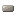

Инкубатор
alaindustrial:incubator
Сводка
Инкубатор — мультиблок 1×2: приземистая механическая основа внизу и стеклянный купол сверху. Положите любое стекло (тег c:glass) на основу — оно превратится в объёмную камеру, внутри которой парит и вращается облучаемый предмет. Машина мутирует предметы трёх видов: дублирует (1 → 2), превращает (A → B) или создаёт новый материал мода. Каждая операция ест EU/FE (LV) и заряд облучения: один uranium_ingot даёт 3 попытки, после чего выгорает в depleted_uranium и оседает в зольном слоте. Режим работы задаёт мутационный чип в отдельном слоте — дублирования / трансформации / создания. Без чипа машина не запускается; сам чип не расходуется. Исход вероятностный: при успехе бросается грейд редкости — Обычный (70 %) / Редкий (20 %) / Эпический (8 %) / Легендарный (2 %), он красит имя и даёт бонус к будущим мутациям.
| Что делает | Как |
|---|---|
| Собирает мультиблок | основа + любой блок по тегу c:glass сверху → купол |
| Мутирует предметы | EU/FE (LV) + заряд (1 uranium_ingot = 3 попытки → 1 depleted_uranium) |
| Режим | слот чипа: дублирование / трансформация / создание |
| Виды мутаций | дублирование (×2), трансформация (A→B), создание (A→новый предмет мода) |
| Редкость | на каждом успехе — грейд Обычный / Редкий / Эпический / Легендарный (70/20/8/2 %) |
| Шлак | 5 % попыток дают irradiated_slag вместо пустого провала |
Энергия
Гибридная модель: EU/FE от сети (LV) плюс уран как топливо облучения. Уран не исчезает — превращается в depleted_uranium, заготовку под будущую ядерную фазу.
| Что | Значение |
|---|---|
| Буфер EU/FE | 8000 — вмещает самую дорогую операцию (create) целиком |
| Макс. вход | 32 EU/FE/такт (LV) |
| Потребление | 8 EU/FE/такт во время работы — вчетверо выше стандарта машин |
| Топливо | 1 uranium_ingot = 3 попытки → 1 depleted_uranium в зольник |
Без урана в слоте топлива операция не стартует; EU/FE тратятся только во время цикла.
Процессинг
Длительность и цена привязаны к виду мутации. Инкубатор — самая энергоёмкая LV-машина мода: минимум 2400 EU/FE за операцию против 200–300 у обычных машин.
| Вид | Шанс успеха | Тики | EU/FE/попытку | При провале |
|---|---|---|---|---|
| Трансформация | 0.75 | 300 (15 c) | 2400 | вход теряется, −1 заряд |
| Дублирование | 0.45 | 500 (25 c) | 4000 | вход теряется, −1 заряд |
| Создание | 0.25 | 1000 (50 c) | 8000 | вход теряется, −1 заряд |
Три исхода попытки:
| Исход | Вероятность | Что происходит |
|---|---|---|
| Успех | шанс по виду (+ бонус гена, кап 0.95) | результат в выходной слот + бросок грейда |
| Шлак | 5 % | вход теряется, в выход падает irradiated_slag |
| Провал | остаток | вход теряется, выход не меняется |
Шлак вычитается из провала, а не из успеха — шанс успеха не падает. Грейд бросается только на успех (шлак всегда обычный). Исход бросается в конце цикла: до последнего тика результат неизвестен, отменить его выниманием предмета нельзя. Грейд. При успехе бросается редкость: Обычный 70 % / Редкий 20 % / Эпический 8 % / Легендарный 2 %. Обычный не оставляет следов — стакается с ванильными предметами. Редкий и выше ставят компонент mutation_grade и красят имя (жёлтый / голубой / фиолетовый). Ген входа сгорает. Грейд входного предмета даёт бонус к шансу успеха (+5 / +10 / +15 п.п. за Редкий / Эпический / Легендарный, суммарный шанс капится на 0.95) и сгорает — результат получает свежий бросок грейда. Легендарку нельзя размножить дублированием, только потратить ради повышенного шанса.
Инвентарь
Пять слотов: чип, топливо (уран), мутируемый предмет, результат, зола. Результат и зола — только для чтения игроком; автоматизация в зольный слот — pull-only.
| Слот | Принимает | Поведение |
|---|---|---|
| Чип | # (3 чипа) | 1 шт.; не расходуется; задаёт режим; пустой слот = машина не работает; автоматикой не вынимается |
| Топливо | # (= uranium_ingot) | 1 слиток изымается сразу при укладке в собранную машину; заряд = 3 попытки |
| Вход | предметы с рецептом мутации в выбранном режиме | 1 стопка; расходуется 1/попытку (теряется при провале) |
| Результат | результат мутации или irradiated_slag | 1 стопка; fill-only |
| Зола | depleted_uranium | 1 стопка; +1 за исчерпанный слиток; pull-only |
Интерфейс
Экран показывает: запас EU/FE, прогресс цикла, заряд облучения (0–3), пять слотов и индикатор собранного мультиблока. Полоса энергии — слева, заряд облучения — вертикальный столбик пипсов справа от топливного слота, заполняется снизу вверх. Верхний ряд: чип, вход, стрелка прогресса, результат; нижний — топливо и зола. Слот чипа — верхний левый. Пока он пуст, строка состояния подсказывает, чего не хватает («Нужно стекло сверху» → «Нужен чип»). Замена чипа сбрасывает прогресс текущей операции. Обе половины мультиблока кликабельны: правый клик по куполу открывает то же меню, что и по основе.
Свойства блока
Двухъярусный мультиблок с разным силуэтом: тяжёлый механический низ и лёгкий скруглённый верх — не «два куба друг на друге». Основа — полный куб с углублённой передней панелью, кольцом-эмиттером по верхней грани и патрубками охлаждения по бокам. Во время работы над ней поднимается свечение эмиттера. Купол — объёмная скруглённая камера, ставится автоматически из любого стекла по тегу c:glass. Исходный тип стекла запоминается, поэтому: при разборке мультиблока возвращается ровно ваше стекло — ничего не теряется; цветное стекло тонирует купол — 17 вариантов окраски без новых рецептов: 16 цветов витражного плюс бесцветный. Каркас и шпиль всегда в тёмном металле. Облучаемый предмет парит по центру камеры и медленно вращается; при работе — частицы и пульсация свечения.
Рецепты
Основа — корпусной стандарт, полная сетка 3×3: 1 машинный корпус + 2 урановые пластины + 3 стекла + 1 электронная схема + 2 железные пластины. Урановые пластины гейтят вход в механику уже налаженной урановой цепочкой (руда → слиток → пластина). Три чипа режимов крафтятся из empty_chip плюс тематическая начинка; урановая пластина в каждом — общий «облучающий» элемент:
| Чип | Рецепт | Режим |
|---|---|---|
mutation_chip_duplicate | пустой чип + 2 осколка аметиста + урановая пластина | дублирование |
mutation_chip_transform | пустой чип + редстоун + лазурит + урановая пластина | трансформация |
mutation_chip_create | пустой чип + алмаз + осколок эха + урановая пластина | создание |
Тип рецепта — три отдельных типа, по одному на режим: mutation_transform, mutation_duplicate, mutation_create. Каждый JSON описывает один вход → один выход с опциональным chance (override). Топливо в рецепте не упоминается — уран это заряд машины, а не ингредиент.
Дублирование — 4 класса ценности
Цена попытки фиксирована (⅓ слитка + 4000 EU/FE + 25 c), поэтому балансный рычаг один — шанс успеха: чем ценнее предмет, тем ниже шанс.
| Класс | Шанс | Предметы |
|---|---|---|
| Самоцветы и ценные слитки | 0.45 | diamond, emerald, amethyst_shard, gold_ingot, silver_ingot, nickel_ingot |
| Минералы и рядовые слитки | 0.55 | coal, redstone, lapis_lazuli, quartz, glowstone_dust, iron_ingot, copper_ingot, tin_ingot |
| Редкая органика | 0.60 | nether_wart, cocoa_beans, glow_berries, torchflower_seeds, pitcher_pod |
| Базовая агрокультура | 0.85 | wheat_seeds, beetroot_seeds, melon_seeds, pumpkin_seeds, carrot, potato |
Слитки — да, обработанные детали — нет. Дублируются ванильные и модовые слитки (iron, copper, gold, tin, silver, nickel) — это базовое сырьё. Всё обработанное (пыли, пластины, корпус, схемы, чипы, кабели, руда и рудные блоки) не дублируется — иначе обесценилась бы крафт-цепочка. Уран не дублируется (рецепта нет).
Трансформация — горизонтальный обмен
Меняем равноценное на равноценное. Апгрейд по ценности (железо → золото) запрещён. Все 27 рецептов — шанс 0.75, 300 тиков, 2400 EU/FE. Для семейств из многих предметов (саженцы, цветы, грунты) применяется кольцо: каждый предмет превращается в следующий по кругу, пока не выпадет нужный.
| Категория | Рецепты | Кольцо |
|---|---|---|
| Минералы | 3 | lapis_lazuli ↔ redstone, quartz ↔ glowstone_dust, coal ↔ charcoal (все 1:1) |
| Саженцы | 8 | дуб → берёза → ель → тропический → акация → тёмный дуб → вишня → мангровый → дуб |
| Цветы | 8 | одуванчик → мак → синяя орхидея → лужайник → голубой лепесток → василёк → ландыш → ромашка → одуванчик |
| Грунты | 5 | земля → подзол → мицелий → земля; песок ↔ красный песок |
Создание — эволюционные лестницы
Обычный предмет эволюционирует в уникальный материал мода по трёхступенчатой лестнице. Чем выше ступень, тем ниже шанс и дороже операция. На ступенях 2–3 провал возвращает вход целым (сгорают только заряд и EU/FE) — иначе никто бы не рисковал подниматься выше первой.
| Ветка | Ступень 1 | Ступень 2 | Ступень 3 | |
|---|---|---|---|---|
| Алмазная — энергоплотность | diamond → облучённый алмаз | → алмазная матрица | → ядро сингулярности | |
| Кристальная — оптика | amethyst_shard → резонирующий осколок | → фокусирующая линза | → призматическое ядро | |
| Биологическая — агро | lapis_lazuli → мутаген-пыль | → живой мутаген | → генная матрица | |
| Ядерная — топливо | depleted_uranium → нестабильный изотоп | → обогащённое ядро | → изотопный концентрат | |
| Ступень | Шанс | Тики | EU/FE | При провале |
| --------- | ------ | ------ | ----- | ------------- |
| 1 (ваниль → материал мода) | 0.25 | 1000 | 8000 | вход теряется |
| 2 | 0.15 | 1500 | 12000 | вход возвращается целым |
| 3 | 0.08 | 2000 | 16000 | вход возвращается целым |
Ядерная ветка стартует с золы самого инкубатора — отработанный уран становится входом в цепочку, а не мусором. В текущем релизе входят только 4 рецепта ступени 1 (по одному на ветку): diamond → irradiated_diamond, amethyst_shard → resonant_shard, lapis_lazuli → mutagen_dust, depleted_uranium → unstable_isotope. Ступени 2–3 и апгрейд-чипы из верхних материалов — следующий релиз.
Прогрессия
Тир: LV. Строить после первых машин (macerator/extractor), когда есть стабильная урановая жила и EU/FE-сеть. Вводит 7 новых предметов: depleted_uranium, irradiated_diamond, mutagen_dust, resonant_shard, unstable_isotope, irradiated_slag (побочный продукт 5 % попыток — без потребителей в этом релизе, задел под будущее) + три чипа режимов. Грейды-«гены» на материалах дают бонус к шансу повторной мутации (+5/+10/+15 п.п.) — потребители появятся в будущих агро/ядерных фазах. Достижения мутаций: «Что-то изменилось» (любой мутировавший предмет), «Из ничего» (материал режима create), «Один из пятидесяти» (легендарный исход).
Совместимость
JEI/REI: три категории — по одной на режим; в строке под рецептом — цена, длительность и шанс успеха (2400 EU/FE · 15 s · 75 %). Грейды — отдельная инфо-страница на самом инкубаторе. Тултип предмета: строка «Грейд мутации: …». Jade/The One Probe: прогресс цикла, EU/FE, режим мутации, статус мультиблока, заполнение зольного слота. Автоматизация: хопперы/трубы работают с основой (чип — push-only, топливо — push, вход — push, результат — pull, зола — pull). Купол чисто структурный, без инвентаря. Чип автоматикой не вынимается ни с одной грани — это выбор на этапе постройки.
Связанное
Уран — топливный слиток. Ядерная тема — куда пойдёт depleted_uranium. Телепорт-мультиблок — родственная задача на структуру. Лесопилка — образец машины с переключаемыми режимами. Солнечная панель — образец слота чипа, задающего режим.
Крафт
Крафт на верстаке
incuba
incuba
incuba

▶
Инкубатор